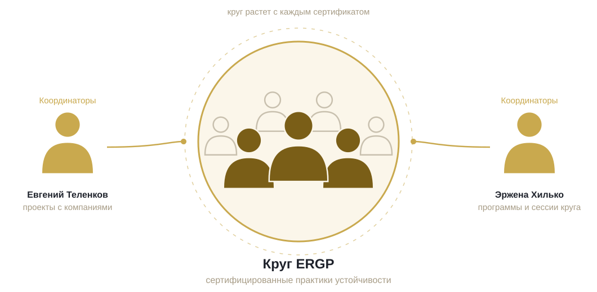

Основатели сообщества
Один партнер ведет практику непрерывности и приносит проекты, другая ведет программы и держит сообщество живым.

- «Лучший риск-менеджер России 2020» (РусРиск)
- В «Норникеле» построил непрерывность бизнеса с нуля, более 20 планов; риск-функции в «Билайне», «Роснефти», EY
- Директор по рискам нефтехимического мегапроекта на 20 млрд долларов (АГХК, СИБУР), 200+ индикаторов строительных рисков
- 15+ программ непрерывности внедрено, 300+ специалистов обучено; автор ERGP, SAFE и русско-английской библиотеки
- Зампред ТК-010 «Менеджмент риска» Росстандарта; экспертиза: BCM и BCP, операционные и ИТ-риски, киберустойчивость, ИСО 22301
- Директор по рискам American Express Bank и оператора его платежной системы, 2010–2024; председатель комитета по рискам, член КУАП и кредитного комитета
- Построила систему управления рисками в 12 бизнес-подразделениях по модели трех линий защиты, без замечаний аудита; ВПОДК по Базелю III
- Самооценка рисков и контролей по 15+ ключевым процессам, мониторинг KRI, стресс-тестирование, план непрерывности с ежегодными учениями; проверки регулятора без замечаний
- Ранее руководитель рисков Bank of Cyprus Russia, корпоративные финансы в Deloitte, аудит в Ernst & Young; международные команды в Скандинавии, Центральной Европе и EMEA
- Отвечает за дизайн обучения, расписание потоков и опыт студента во всех программах; сертифицированный бизнес-психолог
Профессиональное сообщество ERGP

Сдав ERGP, вы входите в профессиональное сообщество практиков с сертификатом, которое координируют основатели. Сообщество одно на русскую, английскую и арабскую редакции программы. Сегодня оно невелико и растет с каждым выданным сертификатом.
Членство получают один раз, на экзамене, и оно дает три вещи.
- Ежеквартальная сессия сообщества: один реальный случай, разобранный с основателями и экзаменаторами
- Новые модули и разборы требований регуляторов приходят членам сообщества до публикации
- Рабочие шаблоны из живых проектов
- Закрытый каталог членов со специализацией и контактами, доступен только внутри сообщества
- Прямой доступ к экзаменаторам и друг к другу
- Коллеги, которые решают ту же задачу в соседней отрасли
- Мы назначаем членов сообщества на проекты компаний: аудит, дашборд, построение системы
- Члены со стажем становятся экзаменаторами и соавторами модулей
- Ваше имя в открытом реестре, который проверит любой работодатель
Как вступить
Сообщество открыто для обладателей сертификата ERGP. Программа и стоимость →
Для компаний: обратитесь к практике
Нужны руки для аудита по ИСО 22301 или требованиям Банка России, дашборд непрерывности и рисков, система непрерывности, построенная вместе с вашей командой? Опишите задачу. Мы назначаем на проект члена сообщества, уровень которого проверили сами на экзамене, а основатели остаются на проекте координаторами.
Услуги для компаний →Как устроена практика
Мы пришли в непрерывность изнутри организаций.
Планы, которые мы пишем клиентам, до этого исполняли сами, в промышленном холдинге, в международном банке, под проверкой регулятора. Наши планы короткие и написаны для худшего дня.
Мы считаем риск в деньгах.
Разговор о стоимости дня простоя заканчивается решением. В каждом проекте появляется модель, где сбой доходит до выручки и прибыли.
Мы строим систему вместе с командой клиента.
Схему восстановления собираем в рабочих сессиях с теми, кто будет действовать, и оставляем компании общий язык вместе с документами.
Практика охватывает промышленность, финансы, страхование, транспорт, ИТ и розницу; ИСО 22301 и российский профиль ГОСТ Р; подготовку компаний к аудиту и к разговору с регулятором. Больше восьмисот специалистов прошли наши программы. Методология опубликована открыто в разделе «Материалы» и в словаре.
Задайте вопрос или запишитесь на демонстрацию
Расскажите о вашей задаче — ответим в течение рабочего дня и предложим следующий шаг.